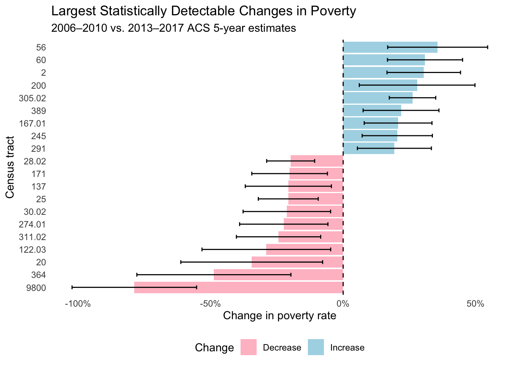
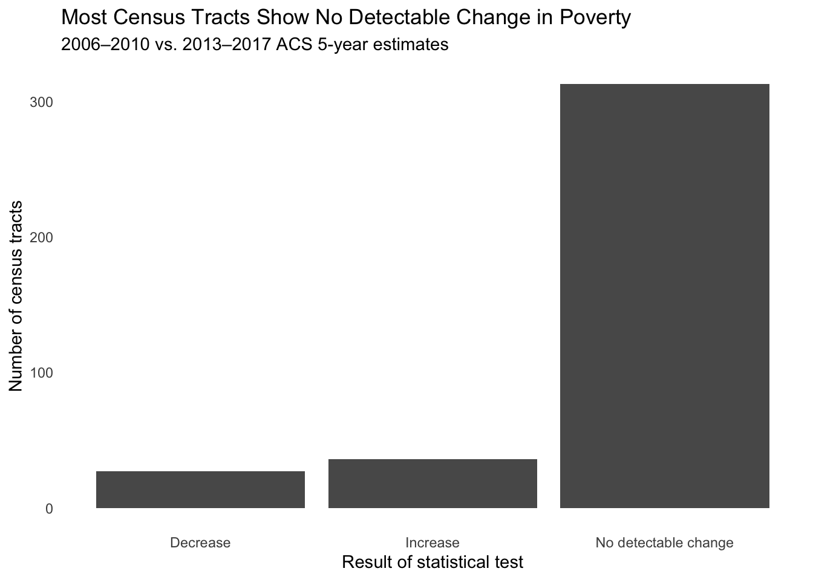

Show code
total_2010 <- poverty_2010 %>%
filter(variable == "total")
below_2010 <- poverty_2010 %>%
filter(variable == "below_poverty")Sophia Meyers
September 14, 2026
Alfred Lubrano reported on changes in poverty and inequality across Philadelphia neighborhoods in 2018, using American Community Survey (ACS) estimates. The article shows large differences in poverty between neighborhoods. This analysis tests whether observed changes between the two periods are statistically distinguishable from zero. I then use the results and the uncertainty associated with the estimates to evaluate how strongly the article’s claims can be supported.
The article cites the U.S. Census Bureau’s 5-Year American Community Survey as its source and compares the 2006-2010 and 2013-2017 periods. The article does not say the exact ACS variables it used, but I assume that its poverty comparisons are based on the number of people below the poverty level relative to the total sample. I therefore use ACS table B17001, with B17001_001 being the total sample and B17001_002 being the population below the poverty level. I calculate the poverty rate for each Philadelphia census tract as the estimated population below poverty divided by the total population. I also calculate the margin of error for each poverty-rate estimate, rather than using the margin of error for the poverty count alone. I then calculate the coefficient of variation (CV) to evaluate reliability, following these thresholds: CV values below 12% are considered reliable, values from 12% to 40% are somewhat reliable, and values above 40% are unreliable. The two ACS periods do not overlap in their five-year time windows: 2006-2010 and 2013-2017. Because of this, the differences between the estimates can be interpreted as changes between two distinct periods. They should still be interpreted with the uncertainty associated with each estimate.
# A tibble: 6 × 7
GEOID NAME total total_moe below_poverty below_moe poverty_rate
<chr> <chr> <dbl> <dbl> <dbl> <dbl> <dbl>
1 42101000100 Census Tract… 3042 455 364 257 0.120
2 42101000200 Census Tract… 1919 270 138 72 0.0719
3 42101000300 Census Tract… 2915 315 271 120 0.0930
4 42101000401 Census Tract… 1525 277 529 227 0.347
5 42101000402 Census Tract… 3156 302 263 142 0.0833
6 42101000500 Census Tract… 1080 232 229 112 0.212 # A tibble: 6 × 7
GEOID NAME total total_moe below_poverty below_moe poverty_rate
<chr> <chr> <dbl> <dbl> <dbl> <dbl> <dbl>
1 42101000100 Census Tract… 4155 429 292 126 0.0703
2 42101000200 Census Tract… 2558 425 962 378 0.376
3 42101000300 Census Tract… 3315 311 280 98 0.0845
4 42101000401 Census Tract… 2632 287 486 165 0.185
5 42101000402 Census Tract… 3299 419 141 98 0.0427
6 42101000500 Census Tract… 1539 124 536 107 0.348 # A tibble: 6 × 8
GEOID NAME total total_moe below_poverty below_moe poverty_rate poverty_moe
<chr> <chr> <dbl> <dbl> <dbl> <dbl> <dbl> <dbl>
1 421010… Cens… 3042 455 364 257 0.120 0.0826
2 421010… Cens… 1919 270 138 72 0.0719 0.0361
3 421010… Cens… 2915 315 271 120 0.0930 0.0399
4 421010… Cens… 1525 277 529 227 0.347 0.135
5 421010… Cens… 3156 302 263 142 0.0833 0.0443
6 421010… Cens… 1080 232 229 112 0.212 0.0932| Least Reliable Poverty Rate Estimates | |||||
| Philadelphia census tracts, 2013–2017 ACS 5-year estimates | |||||
| Census Tract | Poverty Rate | MOE | CV (%) | Reliability | |
|---|---|---|---|---|---|
| 🔴 | Census Tract 9891, Philadelphia County, Pennsylvania | 0.925 | 2.2 | 144.9 | Unreliable |
| 🔴 | Census Tract 9800, Philadelphia County, Pennsylvania | 0.049 | 0.1 | 85.6 | Unreliable |
| 🔴 | Census Tract 231, Philadelphia County, Pennsylvania | 0.008 | 0.0 | 66.7 | Unreliable |
| 🔴 | Census Tract 256, Philadelphia County, Pennsylvania | 0.036 | 0.0 | 64.7 | Unreliable |
| 🔴 | Census Tract 9801, Philadelphia County, Pennsylvania | 0.133 | 0.1 | 61.5 | Unreliable |
| 🔴 | Census Tract 386, Philadelphia County, Pennsylvania | 0.030 | 0.0 | 59.3 | Unreliable |
| 🔴 | Census Tract 9802, Philadelphia County, Pennsylvania | 0.115 | 0.1 | 51.4 | Unreliable |
| 🔴 | Census Tract 340, Philadelphia County, Pennsylvania | 0.097 | 0.1 | 47.9 | Unreliable |
| 🔴 | Census Tract 347.02, Philadelphia County, Pennsylvania | 0.020 | 0.0 | 47.1 | Unreliable |
| 🔴 | Census Tract 10.02, Philadelphia County, Pennsylvania | 0.064 | 0.0 | 46.7 | Unreliable |
| 🔴 | Census Tract 220, Philadelphia County, Pennsylvania | 0.013 | 0.0 | 45.4 | Unreliable |
| 🔴 | Census Tract 363.03, Philadelphia County, Pennsylvania | 0.057 | 0.0 | 44.2 | Unreliable |
| 🔴 | Census Tract 29, Philadelphia County, Pennsylvania | 0.176 | 0.1 | 43.4 | Unreliable |
| 🔴 | Census Tract 341, Philadelphia County, Pennsylvania | 0.098 | 0.1 | 42.4 | Unreliable |
| 🔴 | Census Tract 365.01, Philadelphia County, Pennsylvania | 0.126 | 0.1 | 42.2 | Unreliable |
| 🔴 | Census Tract 8.01, Philadelphia County, Pennsylvania | 0.139 | 0.1 | 41.9 | Unreliable |
| 🔴 | Census Tract 4.02, Philadelphia County, Pennsylvania | 0.043 | 0.0 | 41.5 | Unreliable |
| 🔴 | Census Tract 236, Philadelphia County, Pennsylvania | 0.104 | 0.1 | 41.1 | Unreliable |
| 🔴 | Census Tract 366, Philadelphia County, Pennsylvania | 0.048 | 0.0 | 40.6 | Unreliable |
| 🔴 | Census Tract 356.02, Philadelphia County, Pennsylvania | 0.025 | 0.0 | 40.3 | Unreliable |
| 🔴 | Census Tract 235, Philadelphia County, Pennsylvania | 0.093 | 0.1 | 40.0 | Unreliable |
| 🔴 | Census Tract 365.02, Philadelphia County, Pennsylvania | 0.067 | 0.0 | 40.0 | Unreliable |
| 🟡 | Census Tract 352, Philadelphia County, Pennsylvania | 0.059 | 0.0 | 40.0 | Somewhat reliable |
| 🟡 | Census Tract 10.01, Philadelphia County, Pennsylvania | 0.059 | 0.0 | 39.9 | Somewhat reliable |
| 🟡 | Census Tract 40.02, Philadelphia County, Pennsylvania | 0.072 | 0.0 | 39.5 | Somewhat reliable |
| Reliability thresholds follow Jurjevich et al. (2018): CV < 12% reliable, 12–40% somewhat reliable, and > 40% unreliable. | |||||
The next step is to see if the difference between the two poverty-rate estimates represents a statistically significant change or could instead be explained by sampling uncertainty. For each census tract, I calculate the change in poverty rate between 2006-2010 and 2013-2017 and calculate a margin of error for that change by combining the uncertainty from both estimates. I use the 90% confidence interval, consistent with the ACS margin of error, to determine whether each change is statistically distinguishable from zero.
poverty_change <- poverty_rate_2010 %>%
select(
GEOID,
NAME,
poverty_rate_2010 = poverty_rate,
poverty_moe_2010 = poverty_moe
) %>%
left_join(
poverty_rate_2017 %>%
select(
GEOID,
poverty_rate_2017 = poverty_rate,
poverty_moe_2017 = poverty_moe
),
by = "GEOID"
) %>%
mutate(
change = poverty_rate_2017 - poverty_rate_2010
)# A tibble: 8 × 2
GEOID NAME
<chr> <chr>
1 42101005000 Census Tract 50, Philadelphia County, Pennsylvania
2 42101980300 Census Tract 9803, Philadelphia County, Pennsylvania
3 42101980400 Census Tract 9804, Philadelphia County, Pennsylvania
4 42101980500 Census Tract 9805, Philadelphia County, Pennsylvania
5 42101980600 Census Tract 9806, Philadelphia County, Pennsylvania
6 42101980700 Census Tract 9807, Philadelphia County, Pennsylvania
7 42101980800 Census Tract 9808, Philadelphia County, Pennsylvania
8 42101980900 Census Tract 9809, Philadelphia County, Pennsylvania# A tibble: 8 × 4
GEOID NAME poverty_rate_2010 poverty_rate_2017
<chr> <chr> <dbl> <dbl>
1 42101005000 Census Tract 50, Philadelphia… NaN NaN
2 42101980300 Census Tract 9803, Philadelph… NaN NaN
3 42101980400 Census Tract 9804, Philadelph… NaN NaN
4 42101980500 Census Tract 9805, Philadelph… NaN NaN
5 42101980600 Census Tract 9806, Philadelph… 0.0978 NaN
6 42101980700 Census Tract 9807, Philadelph… NaN NaN
7 42101980800 Census Tract 9808, Philadelph… NaN NaN
8 42101980900 Census Tract 9809, Philadelph… NaN NaN# A tibble: 8 × 2
GEOID NAME
<chr> <chr>
1 42101005000 Census Tract 50, Philadelphia County, Pennsylvania
2 42101980300 Census Tract 9803, Philadelphia County, Pennsylvania
3 42101980400 Census Tract 9804, Philadelphia County, Pennsylvania
4 42101980500 Census Tract 9805, Philadelphia County, Pennsylvania
5 42101980600 Census Tract 9806, Philadelphia County, Pennsylvania
6 42101980700 Census Tract 9807, Philadelphia County, Pennsylvania
7 42101980800 Census Tract 9808, Philadelphia County, Pennsylvania
8 42101980900 Census Tract 9809, Philadelphia County, Pennsylvania# A tibble: 8 × 4
GEOID NAME total below_poverty
<chr> <chr> <dbl> <dbl>
1 42101005000 Census Tract 50, Philadelphia County, Pennsyl… 0 0
2 42101980300 Census Tract 9803, Philadelphia County, Penns… 0 0
3 42101980400 Census Tract 9804, Philadelphia County, Penns… 0 0
4 42101980500 Census Tract 9805, Philadelphia County, Penns… 0 0
5 42101980600 Census Tract 9806, Philadelphia County, Penns… 92 9
6 42101980700 Census Tract 9807, Philadelphia County, Penns… 0 0
7 42101980800 Census Tract 9808, Philadelphia County, Penns… 0 0
8 42101980900 Census Tract 9809, Philadelphia County, Penns… 0 0# A tibble: 8 × 4
GEOID NAME total below_poverty
<chr> <chr> <dbl> <dbl>
1 42101005000 Census Tract 50, Philadelphia County, Pennsyl… 0 0
2 42101980300 Census Tract 9803, Philadelphia County, Penns… 0 0
3 42101980400 Census Tract 9804, Philadelphia County, Penns… 0 0
4 42101980500 Census Tract 9805, Philadelphia County, Penns… 0 0
5 42101980600 Census Tract 9806, Philadelphia County, Penns… 0 0
6 42101980700 Census Tract 9807, Philadelphia County, Penns… 0 0
7 42101980800 Census Tract 9808, Philadelphia County, Penns… 0 0
8 42101980900 Census Tract 9809, Philadelphia County, Penns… 0 0
Decrease Increase No detectable change
27 36 313
Decrease Increase No detectable change
7.180851 9.574468 83.244681 
The results suggest that changes in poverty rates were not widespread across Philadelphia census tracts. Some tracts show changes large enough to be statistically distinguishable from zero, but the majority of tracts do not have a detectable change once the margins of error are taken into account. This distinction is important because subtracting one ACS estimate from another can make a change appear meaningful even when the uncertainty surrounding the estimates is large enough that the true change could be zero. The reliability analysis provides context for interpreting the results. ACS estimates are based on samples rather than a complete count of the population, so the precision of the poverty-rate estimates varies across census tracts. Smaller populations are less precise estimates, which can produce larger coefficients of variation. The observed changes provide evidence of some tract-level change, but they do not support the conclusion that poverty changed substantially throughout Philadelphia. The results suggest that the claims about neighborhood change really need to account for the uncertainty surrounding the ACS estimates.
The ACS data support the article’s broader claim that poverty is unevenly distributed across Philadelphia. The tract-level estimates show substantial differences in poverty rates between census tracts during 2013-2017. Some tracts have very high poverty rates while others have much lower rates. This pattern is consistent with the article’s description of a large economic divide between Philadelphia neighborhoods. The distribution of poverty across tracts supports the article’s broader argument that economic inequality is geographically determined within the city. The data do not provide enough evidence to conclude that poverty broadly increased or decreased across Philadelphia between 2006-2010 and 2013-2017. After accounting for the margin of error of both ACS estimates, of the 376 census tracts with defined poverty rates in both periods, most show no statistically detectable change; An observed difference in a tract’s poverty rate is not necessarily evidence of a real change, it may be explained by sampling uncertainty. The data do not support a broad conclusion that poverty substantially changed throughout Philadelphia during this period.

The article uses Philadelphia neighborhood names such as Fairhill and Schuylkill-Southwest Center City, but it doesn’t say which census tracts were included in each neighborhood or provide the exact method used to aggregate the ACS data into those neighborhood boundaries (considering they aren’t officially defined). I can reproduce the underlying ACS estimates at the census-tract level, but I cannot determine exactly which tracts were combined to produce the article’s neighborhood-level estimates. The specific numerical changes attributed to individual neighborhoods cannot be directly verified from the information provided by the article.
New five-year estimates from the U.S. Census Bureau’s American Community Survey show that Philadelphia continues to experience substantial geographic inequality in poverty. The 2013-2017 estimates reveal large differences in poverty rates across census tracts, consistent with the city’s persistent economic divide. In comparison with the 2006-2010 estimates provide less evidence that poverty broadly changed across the city. After accounting for the margins of error, most census tracts show no statistically detectable change in their poverty rates. The results suggest that Philadelphia remained highly unequal, but they do not support the conclusion that poverty increased or decreased substantially throughout the city. Changes in individual tracts should be interpreted cautiously because ACS estimates are based on samples. (Adjusted from the article)
---
title: "Verify the Claim: White Philidelphians Living in Higher Rates of Poverty"
author: "Sophia Meyers"
date: today
format:
html:
theme: lux
toc: true
code-fold: true
code-summary: "Show code"
embed-resources: true
---
# Introduction
Alfred Lubrano reported on changes in poverty and inequality across Philadelphia neighborhoods in 2018, using American Community Survey (ACS) estimates. The article shows large differences in poverty between neighborhoods. This analysis tests whether observed changes between the two periods are statistically distinguishable from zero. I then use the results and the uncertainty associated with the estimates to evaluate how strongly the article's claims can be supported.
[Source](https://whyy.org/articles/new-census-figures-on-philly-neighborhoods-show-inequality-high-numbers-of-whites-living-in-poverty/)
## Part 1: Reconstruct
The article cites the U.S. Census Bureau's 5-Year American Community Survey as its source and compares the 2006-2010 and 2013-2017 periods. The article does not say the exact ACS variables it used, but I assume that its poverty comparisons are based on the number of people below the poverty level relative to the total sample. I therefore use ACS table B17001, with B17001_001 being the total sample and B17001_002 being the population below the poverty level. I calculate the poverty rate for each Philadelphia census tract as the estimated population below poverty divided by the total population.
I also calculate the margin of error for each poverty-rate estimate, rather than using the margin of error for the poverty count alone. I then calculate the coefficient of variation (CV) to evaluate reliability, following these thresholds: CV values below 12% are considered reliable, values from 12% to 40% are somewhat reliable, and values above 40% are unreliable. The two ACS periods do not overlap in their five-year time windows: 2006-2010 and 2013-2017. Because of this, the differences between the estimates can be interpreted as changes between two distinct periods. They should still be interpreted with the uncertainty associated with each estimate.
```{r}
#| include: false
library(tidyverse)
library(tidycensus)
poverty_2010 <- get_acs(
geography = "tract",
variables = c(
total = "B17001_001",
below_poverty = "B17001_002"
),
year = 2010,
survey = "acs5",
state = "PA",
county = "Philadelphia"
)
poverty_2017 <- get_acs(
geography = "tract",
variables = c(
total = "B17001_001",
below_poverty = "B17001_002"
),
year = 2017,
survey = "acs5",
state = "PA",
county = "Philadelphia"
)
```
```{r}
total_2010 <- poverty_2010 %>%
filter(variable == "total")
below_2010 <- poverty_2010 %>%
filter(variable == "below_poverty")
```
```{r}
total_2017 <- poverty_2017 %>%
filter(variable == "total")
below_2017 <- poverty_2017 %>%
filter(variable == "below_poverty")
```
```{r}
poverty_rate_2010 <- total_2010 %>%
select(GEOID, NAME, total = estimate, total_moe = moe) %>%
left_join(
below_2010 %>%
select(GEOID, below_poverty = estimate, below_moe = moe),
by = "GEOID"
) %>%
mutate(
poverty_rate = below_poverty / total
)
```
```{r}
head(poverty_rate_2010)
```
```{r}
poverty_rate_2017 <- total_2017 %>%
select(GEOID, NAME, total = estimate, total_moe = moe) %>%
left_join(
below_2017 %>%
select(GEOID, below_poverty = estimate, below_moe = moe),
by = "GEOID"
) %>%
mutate(
poverty_rate = below_poverty / total
)
```
```{r}
head(poverty_rate_2017)
```
```{r}
poverty_rate_2010 <- poverty_rate_2010 %>%
mutate(
poverty_moe = moe_prop(
below_poverty,
total,
below_moe,
total_moe
)
)
```
```{r}
poverty_rate_2017 <- poverty_rate_2017 %>%
mutate(
poverty_moe = moe_prop(
below_poverty,
total,
below_moe,
total_moe
)
)
```
```{r}
head(poverty_rate_2010)
```
```{r}
poverty_rate_2010 <- poverty_rate_2010 %>%
mutate(
cv = (poverty_moe / 1.645) / poverty_rate * 100
)
```
```{r}
poverty_rate_2017 <- poverty_rate_2017 %>%
mutate(
cv = (poverty_moe / 1.645) / poverty_rate * 100
)
```
```{r}
poverty_rate_2010 <- poverty_rate_2010 %>%
mutate(
reliability = case_when(
cv < 12 ~ "Reliable",
cv <= 40 ~ "Somewhat reliable",
cv > 40 ~ "Unreliable"
)
)
```
```{r}
poverty_rate_2017 <- poverty_rate_2017 %>%
mutate(
reliability = case_when(
cv < 12 ~ "Reliable",
cv <= 40 ~ "Somewhat reliable",
cv > 40 ~ "Unreliable"
)
)
```
```{r}
table(poverty_rate_2010$reliability)
```
```{r}
table(poverty_rate_2017$reliability)
```
```{r}
#| include: false
library(gt)
```
```{r}
reliability_table <- poverty_rate_2017 %>%
mutate(
symbol = case_when(
cv < 12 ~ "🟢",
cv <= 40 ~ "🟡",
TRUE ~ "🔴"
)
) %>%
arrange(desc(cv)) %>%
slice_head(n = 25) %>%
select(symbol, NAME, poverty_rate, poverty_moe, cv, reliability)
```
```{r}
#| echo: false
reliability_table %>%
gt() %>%
fmt_number(
columns = poverty_rate,
decimals = 3
) %>%
fmt_number(
columns = c(poverty_moe, cv),
decimals = 1
) %>%
cols_label(
symbol = "",
NAME = "Census Tract",
poverty_rate = "Poverty Rate",
poverty_moe = "MOE",
cv = "CV (%)",
reliability = "Reliability"
) %>%
tab_header(
title = "Least Reliable Poverty Rate Estimates",
subtitle = "Philadelphia census tracts, 2013–2017 ACS 5-year estimates"
) %>%
tab_source_note(
"Reliability thresholds follow Jurjevich et al. (2018): CV < 12% reliable, 12–40% somewhat reliable, and > 40% unreliable."
)
```
## Part 2: Test
The next step is to see if the difference between the two poverty-rate estimates represents a statistically significant change or could instead be explained by sampling uncertainty. For each census tract, I calculate the change in poverty rate between 2006-2010 and 2013-2017 and calculate a margin of error for that change by combining the uncertainty from both estimates. I use the 90% confidence interval, consistent with the ACS margin of error, to determine whether each change is statistically distinguishable from zero.
```{r}
poverty_change <- poverty_rate_2010 %>%
select(
GEOID,
NAME,
poverty_rate_2010 = poverty_rate,
poverty_moe_2010 = poverty_moe
) %>%
left_join(
poverty_rate_2017 %>%
select(
GEOID,
poverty_rate_2017 = poverty_rate,
poverty_moe_2017 = poverty_moe
),
by = "GEOID"
) %>%
mutate(
change = poverty_rate_2017 - poverty_rate_2010
)
```
```{r}
poverty_change <- poverty_change %>%
mutate(
se_2010 = poverty_moe_2010 / 1.645,
se_2017 = poverty_moe_2017 / 1.645,
se_change = sqrt(se_2010^2 + se_2017^2),
change_moe = se_change * 1.645
)
```
```{r}
poverty_change <- poverty_change %>%
mutate(
lower = change - change_moe,
upper = change + change_moe
)
```
```{r}
poverty_change <- poverty_change %>%
mutate(
significant = case_when(
lower > 0 ~ "Increase",
upper < 0 ~ "Decrease",
TRUE ~ "No detectable change"
)
)
```
```{r}
sum(is.na(poverty_change$change))
```
```{r}
poverty_change %>%
filter(is.na(change)) %>%
select(GEOID, NAME)
```
```{r}
poverty_change %>%
filter(is.na(change)) %>%
select(
GEOID,
NAME,
poverty_rate_2010,
poverty_rate_2017
)
```
```{r}
poverty_change %>%
filter(is.na(change)) %>%
select(GEOID, NAME)
```
```{r}
poverty_rate_2010 %>%
filter(GEOID %in% poverty_change$GEOID[is.na(poverty_change$change)]) %>%
select(GEOID, NAME, total, below_poverty)
```
```{r}
poverty_rate_2017 %>%
filter(GEOID %in% poverty_change$GEOID[is.na(poverty_change$change)]) %>%
select(GEOID, NAME, total, below_poverty)
```
```{r}
poverty_change_complete <- poverty_change %>%
filter(!is.na(change))
```
```{r}
nrow(poverty_change_complete)
```
```{r}
table(poverty_change_complete$significant)
```
```{r}
prop.table(table(poverty_change_complete$significant)) * 100
```
```{r}
#| echo: false
poverty_change_complete %>%
filter(significant != "No detectable change") %>%
arrange(desc(abs(change))) %>%
slice_head(n = 20) %>%
mutate(
NAME = str_remove(NAME, "Census Tract "),
NAME = str_remove(NAME, ", Philadelphia County, Pennsylvania"),
direction = if_else(change > 0, "Increase", "Decrease")
) %>%
ggplot(aes(x = reorder(NAME, change), y = change)) +
geom_col(aes(fill = direction)) +
geom_errorbar(
aes(
ymin = change - change_moe,
ymax = change + change_moe
),
width = 0.3
) +
geom_hline(
yintercept = 0,
linetype = "dashed"
) +
coord_flip() +
theme_minimal() +
theme(
panel.grid = element_blank()
) +
scale_y_continuous(
labels = scales::percent
) +
scale_fill_manual(
values = c(
"Decrease" = "pink",
"Increase" = "lightblue"
)
) +
labs(
title = "Largest Statistically Detectable Changes in Poverty",
subtitle = "2006–2010 vs. 2013–2017 ACS 5-year estimates",
x = "Census tract",
y = "Change in poverty rate",
fill = "Change"
) +
theme(
legend.position = "bottom"
)
```
The results suggest that changes in poverty rates were not widespread across Philadelphia census tracts. Some tracts show changes large enough to be statistically distinguishable from zero, but the majority of tracts do not have a detectable change once the margins of error are taken into account. This distinction is important because subtracting one ACS estimate from another can make a change appear meaningful even when the uncertainty surrounding the estimates is large enough that the true change could be zero.
The reliability analysis provides context for interpreting the results. ACS estimates are based on samples rather than a complete count of the population, so the precision of the poverty-rate estimates varies across census tracts. Smaller populations are less precise estimates, which can produce larger coefficients of variation. The observed changes provide evidence of some tract-level change, but they do not support the conclusion that poverty changed substantially throughout Philadelphia. The results suggest that the claims about neighborhood change really need to account for the uncertainty surrounding the ACS estimates.
## Part 3: Adjudicate
The ACS data support the article's broader claim that poverty is unevenly distributed across Philadelphia. The tract-level estimates show substantial differences in poverty rates between census tracts during 2013-2017. Some tracts have very high poverty rates while others have much lower rates. This pattern is consistent with the article's description of a large economic divide between Philadelphia neighborhoods. The distribution of poverty across tracts supports the article's broader argument that economic inequality is geographically determined within the city.
The data do not provide enough evidence to conclude that poverty broadly increased or decreased across Philadelphia between 2006-2010 and 2013-2017. After accounting for the margin of error of both ACS estimates, of the 376 census tracts with defined poverty rates in both periods, most show no statistically detectable change; An observed difference in a tract's poverty rate is not necessarily evidence of a real change, it may be explained by sampling uncertainty. The data do not support a broad conclusion that poverty substantially changed throughout Philadelphia during this period.
```{r}
#| echo: false
poverty_change_complete %>%
count(significant) %>%
ggplot(aes(x = significant, y = n)) +
geom_col() +
theme_minimal() +
theme(
panel.grid = element_blank()
) +
labs(
title = "Most Census Tracts Show No Detectable Change in Poverty",
subtitle = "2006–2010 vs. 2013–2017 ACS 5-year estimates",
x = "Result of statistical test",
y = "Number of census tracts"
)
```
The article uses Philadelphia neighborhood names such as Fairhill and Schuylkill-Southwest Center City, but it doesn't say which census tracts were included in each neighborhood or provide the exact method used to aggregate the ACS data into those neighborhood boundaries (considering they aren't officially defined). I can reproduce the underlying ACS estimates at the census-tract level, but I cannot determine exactly which tracts were combined to produce the article's neighborhood-level estimates. The specific numerical changes attributed to individual neighborhoods cannot be directly verified from the information provided by the article.
## Part 4: Rewrite
New five-year estimates from the U.S. Census Bureau’s American Community Survey show that Philadelphia continues to experience substantial geographic inequality in poverty. The 2013-2017 estimates reveal large differences in poverty rates across census tracts, consistent with the city’s persistent economic divide. In comparison with the 2006-2010 estimates provide less evidence that poverty broadly changed across the city. After accounting for the margins of error, most census tracts show no statistically detectable change in their poverty rates. The results suggest that Philadelphia remained highly unequal, but they do not support the conclusion that poverty increased or decreased substantially throughout the city. Changes in individual tracts should be interpreted cautiously because ACS estimates are based on samples.
(Adjusted from the [article](https://whyy.org/articles/new-census-figures-on-philly-neighborhoods-show-inequality-high-numbers-of-whites-living-in-poverty/))